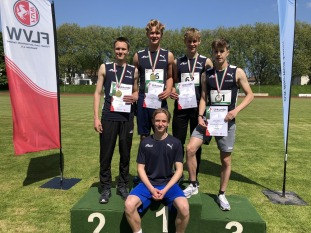

4X400M MJU20 NRW-MEISTER

Toller Erfolg für die männliche U20 der Startgemeinschaft Recklinghausen/Hamm bei den NRW-Langstaffelmeisterschaften in Witten am 18. Mai. In einem spannenden Rennen mit den Läufern des TV Gladbeck gelang es Schlussläufer Fabian Straberg letztendlich den entscheidenden Vorsprung herauslaufen, so dass das Quartett mit Moritz Sand, Elias Korting, Mateja Stevic und Fabian Straberg in 3:26,02 vor dem TV Gladbeck 3:29,98 den Titel gewinnen konnte.